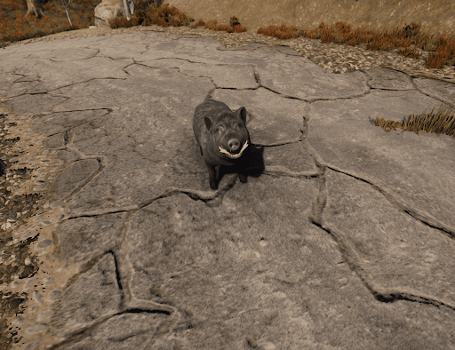
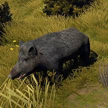

1-boar(borrow)
you can approach it from behind if you sneak
and he is black color,so
timid,if you hit it 1-3 times he will run away,but you`re faster,he have 150hp
and
you will take 20 to 36 damage (no armor)
Ви можете підійти до нього ззаду, якщо прокрадетеся, він чорного кольору, так
полохливий, якщо ти вдариш його 1-3 рази, він втече, але ти швидший, він має 150 hp
і
ви отримаєте від 20 до 36 урона (без броні)
